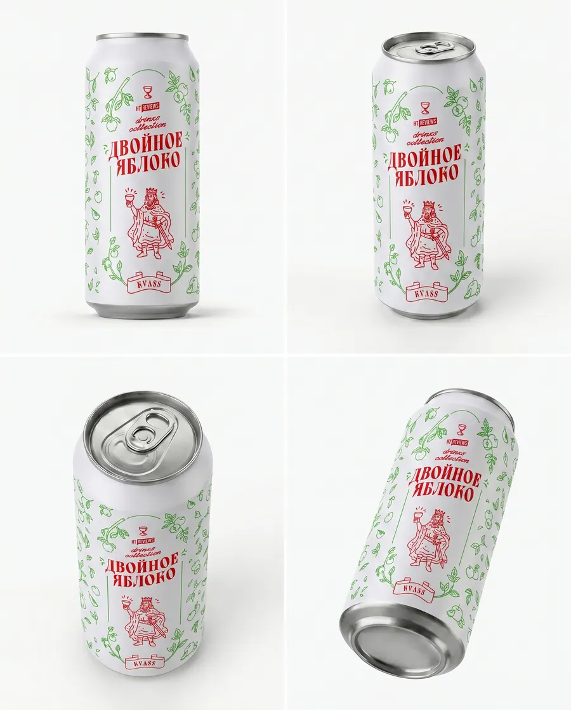
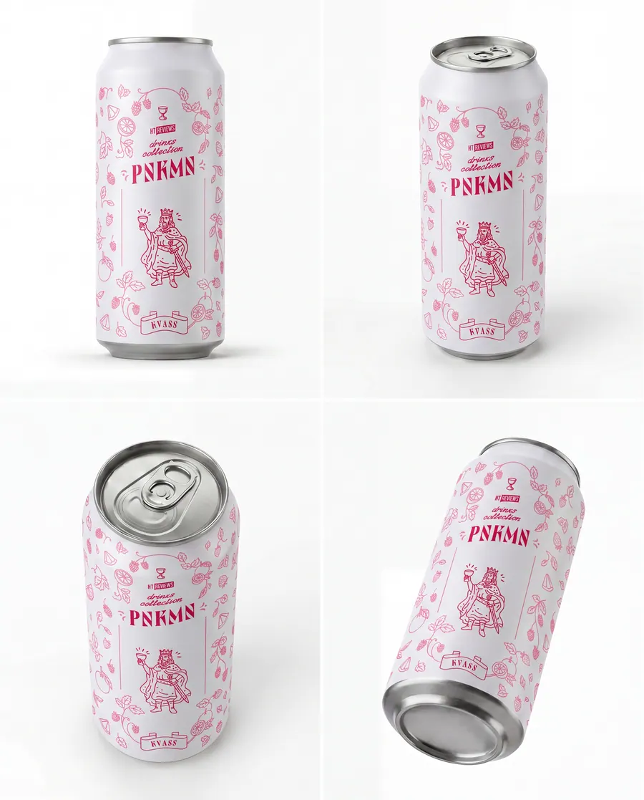
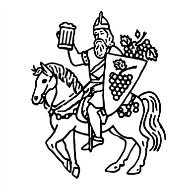
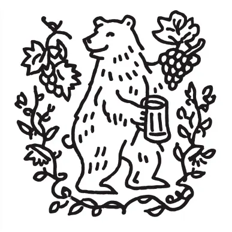
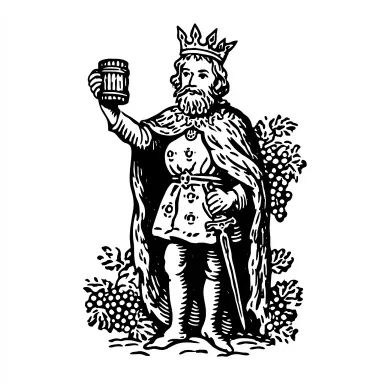
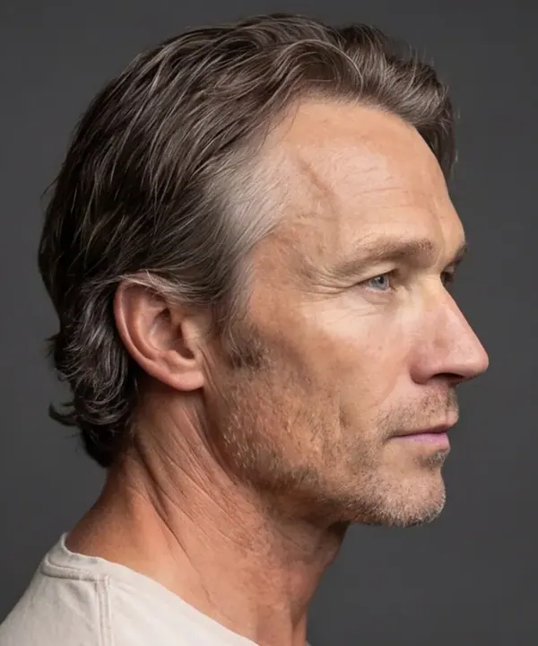
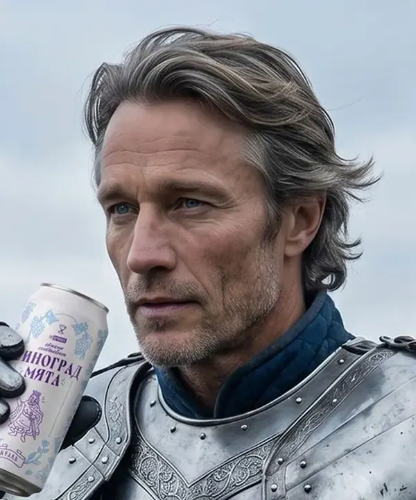
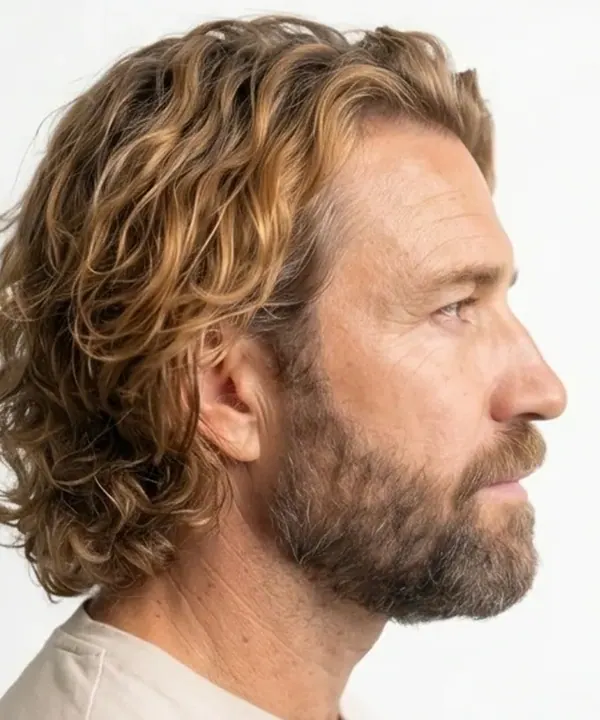
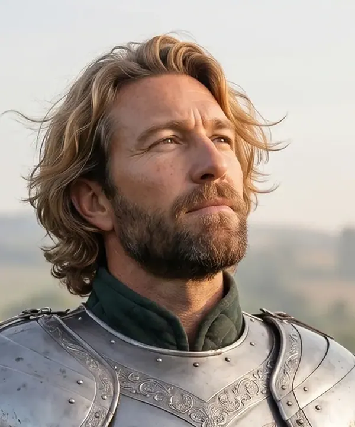

HT Reviews Drinks Collection
Задача
Придумать упаковку и образы для четырёх вкусов кваса в серии мерча HT Reviews.
Решение
Связала вкусы легендой о рыцарском турнире и перенесла образы с упаковки в серию имиджевых сцен.

Король на банке, рыцари в кампании
Упаковка
В основе коллекции легенда о турнире. Король на упаковке символизирует признание победителя, а рыцари представляют четыре вкуса в имиджевой кампании. Банки объединяют светлый фон, гравюра и растительный орнамент. Цвет и детали помогают различать вкусы.





Поиск королевского образа
Поиск образа
В Midjourney я перебирала персонажей, силуэты и степень детализации. Сравнила рыцаря верхом, медведя с кубком и королевские фигуры. Для упаковки выбрала образ короля и связала его с оттенками и растительными деталями каждого вкуса.



Те же герои в разных ракурсах
Герои от кадра к кадру
Для каждого рыцаря я собрала лист образа: лицо крупным планом, профиль и фигура в доспехах. По этим референсам отбирала кадры в Nano Banana, сверяя черты лица, волосы и силуэт доспехов. Отдельные детали изображений дорабатывала вручную в Photoshop, там же собирала финальные материалы.
Виноград-мята


Двойное яблоко




Упаковка в предметных и сюжетных кадрах
Кампания
Светлая предметная композиция подчёркивает вкус и дизайн банки. Для имиджевых сцен я использовала доспехи, кубки и бархат, чтобы связать упаковку с миром героев. Итог проекта — серия банок, образы четырёх персонажей и материалы для публикаций.